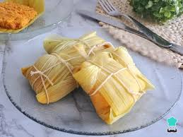

Receta de humita en chala
Una comida típica del noroeste del país
Hoy vas a aprender a hacer una receta típica del norte del país y riquísima!
Y lo mejor es que va a ser mucho mas facil de hacer de lo que pensas!
Ingredientes que necesitamos:
- 6 choclos
- 2 cucharadas de manteca o grasa
- 1 cebolla picada
- 100g de queso
- Sal
- Pimienta
- Una pizca de azúcar
Preparación:
- Pelar los choclos y guardar sus hojas (las chalas)
- Rallar los granos de choclo
- En una olla, reahogar la cebolla con manteca
- Agregar el choclo, sal, pimienta y una pizca de azúcar a la olla
- Cocinar unos minutos hasta que se espese
- Sacar del fuego y agregar el queso en cubitos
- Armar los paquetitos con las chalas y atarlos
- Hervirlos en agua o cocinarlos al vapor unos 20 o 25 minutos

Un video por si necesitas ver a alguien cocinando la receta para saber bien algún paso
Y la receta en otra página.
Receta de Humita en Chala
La región de la cual es originaria la receta